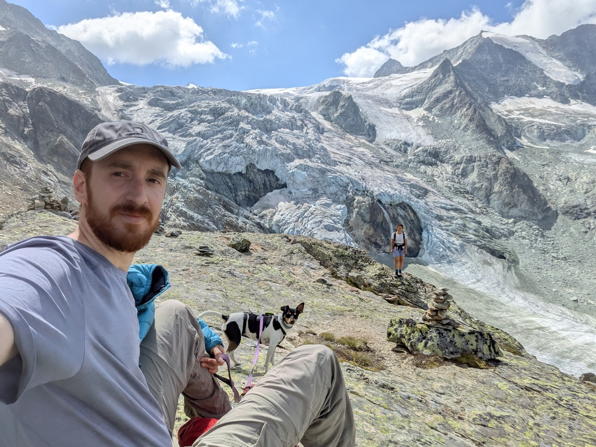

Hello, world. I'm
Miguel Moncada Isla
I build software at the intersection of data, geospatial and the climate. Currently leading the technical side at Cambium, working on tools that help carbon projects do their job a little better.
About me

I'm an environmental engineer with an MSc in Forestry Engineering. I came to software a bit sideways: my final MSc project was a change-detection algorithm for burnt-forest areas in the Iberian Peninsula, and somewhere between writing that and trying to get it to scale, I realised software was where I wanted to be. That project is what got me into CARTO, where I joined as a Support Engineer in 2020 and grew up over almost four years — eventually as Support Lead, but also doing real engineering on the side: FastAPI microservices, ETLs across Postgres and BigQuery, and the Prefect/GCP-based data-pipelines platform.
I'm now Technical Lead at Cambium, where I work on tools that help nature-based carbon projects do their job a little better. I like working on small teams and across the stack — backend, data, geospatial, ML, AI, infra — and I genuinely enjoy the team side of it. Communication and being easy to work with matter to me as much as the code.
Outside work I try to stay close to the wider community — I help organise the PyData Madrid monthly meetups, drop in on GeoInquietos when I can, and collaborate with the GEOQUBIDY research group at UPM/URJC on cloud infrastructure for Earth observation. Off the keyboard: mountains, cooking, writing, and side projects on data and environmental causes when I have the energy.
Where I've worked
The shorter version of my career — roughly chronological.
-
Technical Lead · Cambium
I lead the technical architecture behind Cambium's nature-based carbon projects, building the systems that support project evaluation, monitoring and reporting from end to end. Working across platform engineering, geospatial systems, applied ML and backend development, I help translate carbon methodology into scalable software and operational tools.
- Architected and scaled Cambium's core platform infrastructure on Google Cloud, with GitOps-driven continuous deployment on Kubernetes supporting APIs, data services and production workloads.
- Designed and operate the platform ecosystem spanning orchestration, observability, raster delivery, database infrastructure and LLM services, while integrating elastic compute through Databricks and Coiled for large-scale geospatial processing.
- Leading development of Canopy, our internal platform unifying tools used across the carbon team, shaped through close feedback loops with end users to improve operational efficiency.
- Designed and shipped Knowbase AI, an internal research assistant enabling teams to query Verra methodologies, technical documentation and research papers with verifiable citations.
- Built production-grade forestry data pipelines for external partners, creating robust validation and staging workflows that significantly reduced operational risk during reporting cycles.
- Developed an Above-Ground Biomass modelling pipeline aligned with Verra VM0047, enabling repeatable, on-demand reprocessing as new remote sensing data becomes available.
- Built a geospatial site-selection engine for ARR projects in Brazil, narrowing large candidate regions into viable parcels using carbon, ecological and operational constraints.
- Contributed directly to project design, including protected-area analysis, species composition and spatial planning, balancing carbon performance with ecological integrity.
-
Support Lead · CARTO
Led the Support and Response teams — the people enterprise customers talk to when something is broken or urgent. Worked closely with Engineering, Sales and Customer Success to keep things moving and try to make customers feel heard.
- Looked after a team of four engineers, and stepped in as Response Team Manager when the harder enterprise incidents came through.
- Wired together a small system to give support agents the context they needed before replying, which helped us keep response times under SLA without people burning out.
- Did Technical Account Management work for some of our larger customers — ETL, performance tuning, analytics on BigQuery / Redshift / Snowflake / Postgres.
- Contributed code where I could — the Data Services API, CARTOframes, the Import API — usually starting from a customer-reported bug and working back to the cause.
-
Senior Support Engineer · CARTO
Assisted customers with complex technical problems, providing internal guidance and leading consultancy projects, while supporting Response Team operations and contributing to platform code.
-
Support Engineer · CARTO
Supported customers and internal teams with technical problems, contributing to platform code through the Response Team and providing technical consultancy to clients.
-
GIS Engineer · TMA S.L.
Responsible for the GIS department in environmental impact assessment and urban planning projects.
-
Production Assistant · Aleia Roses S.L.
Worked as agronomic technician in Integrated Pest Management, leading a team of 3.
Things I work with
Languages
- Python
- SQL
- Bash
- TypeScript
AI & LLM
- PydanticAI
- LiteLLM
- Logfire
- pgvector
- Vertex AI · Gemini
- RAG (hybrid · rerank)
Data & analytics
- Prefect
- Airflow
- dbt
- Polars
- DuckDB
- Dask · Coiled
- scikit-learn
- XGBoost
- MLFlow
Databases & warehouses
- PostgreSQL
- Delta Lake
- Databricks
- BigQuery
- Snowflake
Geospatial
- Geopandas
- Xarray
- STAC
- H3
- PostGIS
- CARTO
- QGIS
- Google Earth Engine
Cloud & infrastructure
- GCP
- Terraform
- ArgoCD
- Docker
- Kubernetes
- Coiled
Education
-
M.Sc. Forest Engineering
E.T.S.I. Montes, Forestal y del Medio Natural — Universidad Politécnica de Madrid
-
B.Sc. Environmental Engineering
E.T.S.I. Montes, Forestal y del Medio Natural — Universidad Politécnica de Madrid
Community
-
Organiser · PyData Madrid
Co-organising monthly community meetups for the Madrid PyData chapter.
-
External collaborator · GEOQUBIDY (UPM · URJC)
Technical guidance on cloud infrastructure and scalable analytics for the Group of Earth Observation for Quantitative Biosphere Dynamics.
Languages
- SpanishNative
- EnglishProfessional
Say hi
Always happy to chat — about software, climate, mountains, or what you're working on. Email is the easiest, but any of these work.